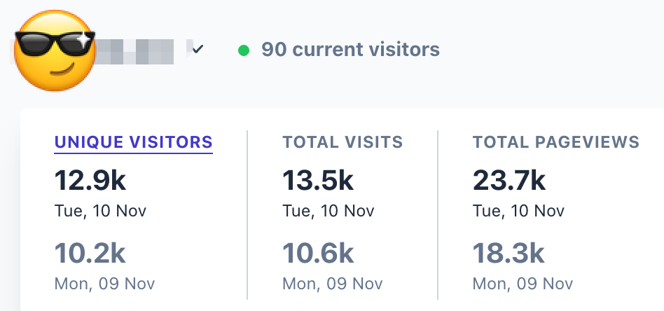

新手还是挺建议做游戏站的，找对了方向，做好了体验，流量会一直涨。
2026 年 11 月 11 日凌晨，哥飞在群里给新手补了一句方向建议：游戏站值得做。随后贴出一张自家站点的 Cloudflare 后台截图，半小时后又补了一篇游戏站科普文章，作为展开说明。
截图里的数字

截图统计的是 11 月 9 日和 10 日两天：单日独立访客 12.9k 和 10.2k，总访问 13.5k 和 10.6k，页面浏览 23.7k 和 18.3k，截图时刻还有 90 人在线。日 PV 接近日 UV 的两倍，说明访客平均会看两个以上页面，这是游戏站典型的使用方式——进来玩，还想再玩一个。
「找对方向」和「做好体验」是两个前提
涨流量不是一个动作，是两个条件同时成立。方向指需求判断：选对玩法，找到真正有人在搜、又没有被大站吃干净的那类游戏词。体验指站内质量：游戏站的用户会直接拿同类站来对比，加载慢一点、广告挡一下屏，跳出就是分分钟的事。
游戏站的流量还有一层和工具站不同的性质：它会累积。工具站做完一次任务就走，游戏站有回访，玩家会记住站点，口碑和搜索排名一起滚。所以「流量会一直涨」不是一句乐观的说法，前提就是前面两条真的做到了。
延伸阅读
哥飞在群里补充的游戏站科普文章：https://new.web.cafe/tutorial/detail/65tv6y1tzb
附录：原始对话
本次对话共 3 条消息（含 1 张图片），时间跨度 2026 年 11 月 11 日 00:21–00:37。
聊天记录（3 条）
参与者 1 人：哥飞 · 时间范围 2026年11月11日 00:21 至 2026年11月11日 00:37 · 原始 3 条，保留 3 条